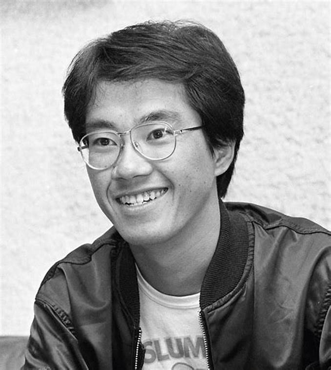

|
Akira Toriyama ( April 5, 1955 - March 1, 2024) was a Japanese manga artist and character designer. He first achieved mainstream recognition for creating the popular manga series Dr. Slump, before going on to create Dragon Ball (his most famous work) and acting as a character designer for several popular video games such as the Dragon Quest series, Chrono Trigger, and Blue Dragon. Toriyama came to be regarded as one of the most important authors in the history of manga with his works highly influential and popular, particularly Dragon Ball, which many manga artists cite as a source of inspiration. In 2019, Toriyama was decorated a Chevalier of the French Ordre des Arts et des Lettres for his contributions to the arts. |
 |
The manga of Dr. Slump follows the antics of an inventor named Senbei Norimaki and his invention: a robot girl called Arale.
The comedy of the series comes from Arale’s sweet naivete and how that clashes with her superhuman strength, leading to some hilarious situations.
Dr. Slump is perfect children’s entertainment, featuring wacky inventions, anthropomorphic animals (a staple of Toriyama’s art and writing), and this blend of goofy comedy with wholehearted sweetness.
Dr. Slump was a serialised manga aimed at a younger audience, which appeared in Weekly Shonen Jump for five years, from 1980 to 1984.
It was then collected and bound into eighteen volumes of tankobon manga.
Dr. Slump also received a popular anime adaptation - Toriyama’s first tryst with anime television - which ran for a very impressive 243 episodes.
Amazon LinkDragon Ball is Akira Toriyama’s legacy wrapped up in a single, perfect series. Reading the manga today shows a remarkably respectable ageing process; the Dragon Ball manga is like a fine wine.
Dragon Ball is a martial arts manga, which was a subgenre increasingly popular in the 80s. But it was unique with its wide-eyed and uppity child protagonist, which had the manga resonating with kids of all ages.
This narrative gives Dragon Ball a fairy tale adventure tone that young boys were so heavily drawn to and mesmerised by, but the martial arts excitement and Chinese inspiration is something that any adult can be attracted to and entertained by.
In this sense, Dragon Ball is an all-ages martial arts adventure epic that speaks to the positivity and sense of adventure in all readers. A true masterpiece.
Amazon LinkThe manga shares similarities with the Mad Max franchise, with one greedy king monopolising the world’s limited water supply, and a detective named Rao heading out in search of a fresh supply of water in order to relinquish the king of his monopoly.
Rao teams up with two demons in order to complete his quest.
Their designs, as well as those of the land and the vehicles, showcase Toriyama’s unique approach to art and design beautifully.
Amazon Link